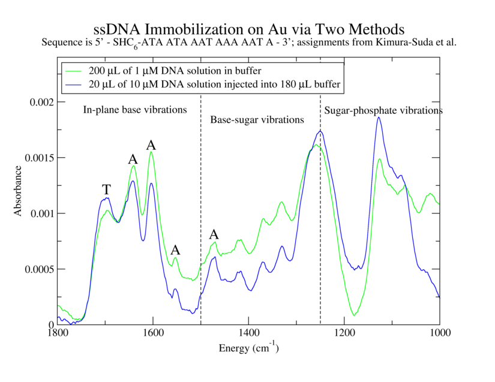
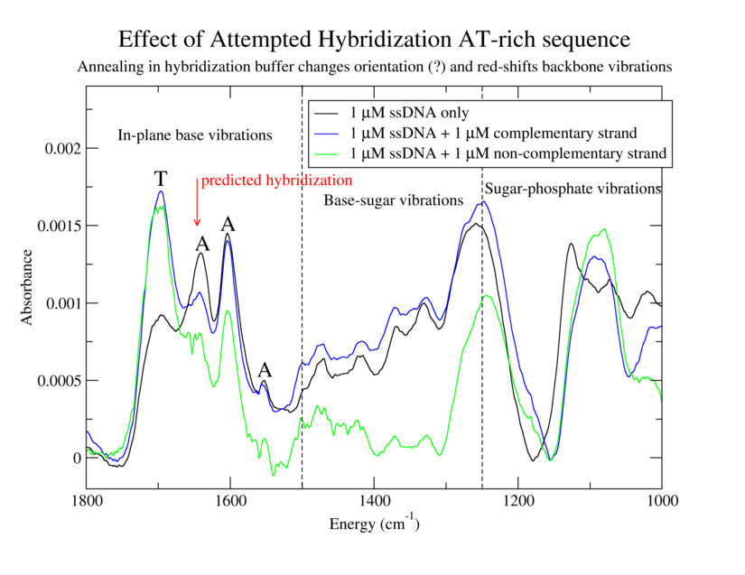
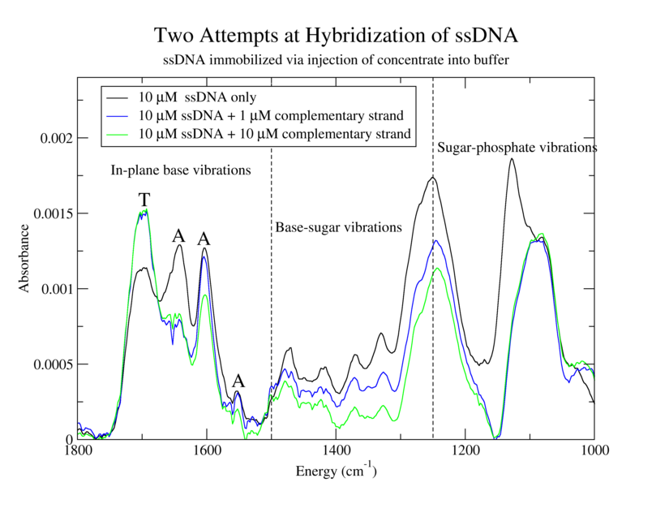

alison@exerciseforthereader.org (Alison Chaiken)
WSRCC Home Page || Up One Level
..
Establish effectiveness of immobilization procedure for ATrich-16. Determine utility of immobilization procedure involving injection of concentrated DNA into a large volume of buffer. Compare spectra of immobilized oligos with and without complementary strands.
  
1. 200 µL of 1 µM ATrich-16 in TE: MgCl2 with TCEP
2. 20 µL of 10 µM ATrich-16 with TCEP into 180 µL TE:MgCl2
3. Same as 1 but with 200 µL of 1 µM GC-ATrich-16 (complementary to ATrich-16)
4. Same as 1 but with 20 µL of 10 µM GC-ATrich-16
5. Same as 3 but with 20 µL of 10 µM GC-ATrich-16
6. Same as 1 but with 200 µL of 1 µM NC-20 (non-complementary)
1. Bring 4x 200 µL aliquots of 1 µM ATrich-16 in TE:MgCl2 and 2x 20 µL aliquots of 10 µM ATrich-16 in TE:MgCl2 to room temperature. Thaw a 20 µL tube of 8 mM TCEP and a 10 µL tube of 40 mM TCEP. Add 3 µL of 8 mM TCEP solution to each of the 4 200 µL tubes and 0.5 µL of 40 mM TCEP solution to each of the 20 µL tubes. Wrap in foil and rock vigorously (speed 8) for at least 2 hours.
2. Piranha-clean top glass (3 mins each), rinse thoroughly in DI water (5 mins) and blow-dry. Sonicate teflon o-rings in acetone and IPA, rinse in water and blow-dry.
1. Label the 3 Au/Cr/glass slides. "Descum" them and the three top plates using oxygen and argon plasmas in the RIE with hipress2.prc.
2. Place the clean Au slides in the test jig and assemble the teflon gaskets and glass plates on top. Mark o-ring positions on glass slide with diamond scribe and label them.
3. Vortex and spin-down microfuge tubes before dispensing. Dispense 200 µL of 1 µM ATrich-16 into 1, 3, 4, and 6.
4. Vortex and spin-down microfuge tubes before dispensing. Dispense 180 µL of TE:MgCl2 buffer into cells 3 and 5. Add one 20 µL aliquot of 10 µM ATrich-16 to 3 and 5.
5. Seal all compartments with Parafilm. Let sit overnight in a darkened, N2-backfilled cabinet.
0. Heat beaker of water in oven to 30 °C. Remove 1x GC-ATrich-16 1 µM 200 µL aliquot, 2x of GC-ATrich-16 10 µM 20 µL aliquots and 3x of NC-20 1 µM 80 µL aliquots from the freezer and place them in the refrigerator to thaw. Heat the rocker to 50C (45 minutes).
1. Remove the parafilm, top glass and gaskets from the slides. Soak the top glass and gaskets in ddH2O. Use two empty pipet tip boxes for the following steps. Wash the slides twice in TE:MgCl2 buffer in a pipet tip container for 10 minutes each using the top of the rocking platform.
2. Immerse slide 1 in DI water and blow-dry. Do not blow-dry the others! Start FTIR background collection.
3. Blow-dry the top plates and o-rings. Transfer the NC-20 aliquots into one tube. Put the GC-ATrich-16 and NC-20 into the heated beaker.
4. Remove the slides 2 and 3 from the water and blot them on the back side. Reassemble the cells. Vortex and spin-down DNA solutions. Add 200 µL of 1 µM GC-ATrich-16 to 3. Add 200 µL of 1 µM NC-20 to 6. Add 180 µL of TE:MgCl2 buffer to 4 and 5, then add 20 µL of 10 µM GC-ATrich-16 to each. Force excess water out of each cell during fill with new solution.
6. Seal the cells with parafilm and place them on the slowly moving, heated rocker.
7. Wait 30 minutes. Turn heat off and wait one hour more.
8. Use two empty pipet tip boxes for the following wash steps. Wash the slides four times, twice in 2xSSC for 5 minutes and twice in 1xSSC for 5 minutes each using the rocking platform. Soak the top plates and o-rings in dI water.
9. Rinse the films in DI water and transport them in water to FTIR.


alison@exerciseforthereader.org
(Alison Chaiken)
WSRCC Home Page || Up One
Level
..